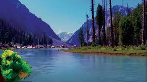
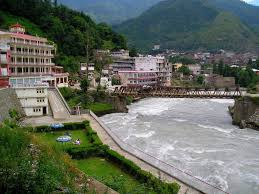

INTRODUCTION
SWAT VALLEY is known as the "mini Switzerland" due to its beautiful landscapes. Swat District, also known as the Swat Valley, is a district in the Malakand Division of Khyber Pakhtunkhwa, Pakistan. Known for its stunning natural beauty, the district is a popular tourist destinationSwat District (Urdu: ضلع سوات, Pashto: سوات ولسوالۍ, pronounced [ˈswaːt̪]), also known as the Swat Valley, is a district in the Malakand Division of Khyber Pakhtunkhwa, Pakistan. Known for its stunning natural beauty, the district is a popular tourist destination. With a population of 2,309,570 per the 2017 national census, Swat is the 15th-largest district of Khyber Pakhtunkhwa
LOCATON
It lies between 34°-40′ to 35° N latitude and 72′ to 74°-6′ E longitude. It is located between the foothills of the Hindukush mountain range. It is part of the North-West Frontier Province of Pakistan. The location of Swat Valley has major strategic importance as it lies where South Asia, Central Asia, and China meet.
TOURIST SPOTS
There are numerous tourist points in Swat. Here are the top 5 places in Swat Valley:
- Kalam Valley
- Kumrat Valley
- Madyan
- Saidu Sharif
- Malam Jabba
Kalam Valley
Located at 2,001 meters (6,565 feet) in the Swat District, Kalam captivates visitors with its breathtaking sites such as Mahodand Lake, known for its clear waters and abundant trout, and the serene Ushu Forest, filled with towering Deodar trees.

Kumrat Valley
It is known for its stunning natural beauty, including lush green forests, snow-capped mountains, sparkling rivers, and magnificent waterfalls. The valley is a popular destination for tourists seeking adventure activities such as trekking, camping, and hiking.

Madyan
Madyan is a town in the Swat District of Khyber Pakhtunkhwa province in Pakistan. It is renowned for its stunning natural beauty, with lush green valleys, crystal-clear rivers, and majestic mountains. Madyan is also known for its vibrant local culture, hospitality, and traditional crafts.

Saidu Sharif
Saidu Sharif is the administrative capital of the Swat District. It is located in the scenic Swat Valley, known for its natural beauty and cultural significance. Saidu Sharif serves as a hub for administrative activities and is home to various government offices, educational institutions, and historical sites. The area is renowned for its ancient Buddhist heritage.

Malam Jabba
Snow, mountains, and surrounding areas offer great views. Attractions in Malam Jabba include skiing, a chairlift, zip-lining, tubing, and free-fall activities.